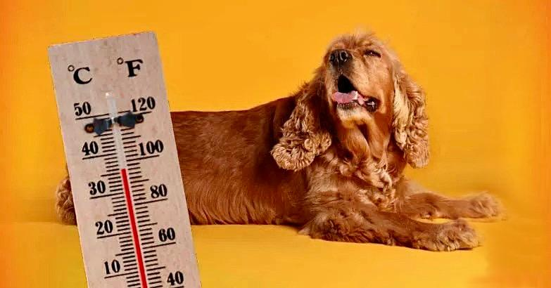

كيف تحمي كلبك في الطقس الحار
سلامة كلبك في الطقس الحار [caption id="attachment_6557" align="alignnone" width="783"] (الصورة عن موقع زرافة/Zarafa) [/caption] من المعروف أن الكلاب تتأثر بالطقس الحار مما يزيد من…

سلامة كلبك في الطقس الحار [caption id="attachment_6557" align="alignnone" width="783"] (الصورة عن موقع زرافة/Zarafa) [/caption] من المعروف أن الكلاب تتأثر بالطقس الحار مما يزيد من…

يمكن أن تسببها أشياء كثيرة مثل الطفيليات أو الفطريات أو الحساسية. يمكن أن تنتقل الطفيليات والفطريات من الحيوانات الأخرى أو من المنطقة التي يعيش فيها الكلب أو يمر بها. من المحتمل أ…
الملح من أفضل الطرق لإنقاذ الكلاب والقطط من السم، أو بحال إبتلاعها أغراضاً غير قابلة للأكل. بحال إبتلاع السمّ من قبل الحيوان في الـ١٥ دقيقة الأولى الملح قد يُنقذه، أما بالنسبة للأ…
الكثير من الوزن يُجهد الرئتين ويسبب مشاكل في التنفس. الكثير من الوزن يؤدي إلى أمراض القلب والأوعية الدموية وأمراض القلب. الكثير من الوزن يُسبِّب صعوبة في الحركة، وانخفاضاً في النش…